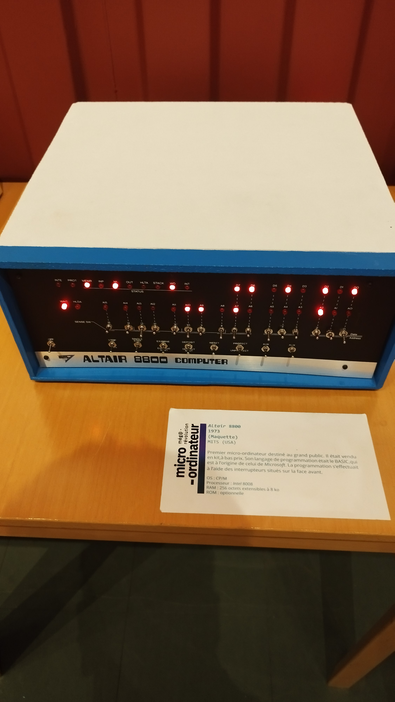

Op 31/10/2024 ben ik naar het NAM-IP Computer Museum gegaan in Namen.
Er was niet veel te zien maar het was wel interessant. Zo heb ik bijvoorbeeld de Altair 8800 gezien in het echt!
Ik ben er ook achter gekomen dat technologie echt snel aan het verbeteren is over de vorige paar jaar, inclusief het internet.
Er waren een heleboel posters met een tijdlijn over heel het museum, zo heb ik gezien dat het ARPAnet pas echt uitkwam in 1969. (Het begon in 1960 met een andere naam.)
Ook waren er veel oude mainframes te zien en een volledig mechanische computer, deze moest ik wel niet kennen want die is ver onder het jaar 1960 maar het was wel cool om te zien.
Het beste was nog steeds de tijdlijn, die gaat echt hard helpen met de tijdlijn die ik zelf moet maken!
En voor de rest was het vooral over de computers meer, maar dit is het dichtste bij dat we vonden tot een museum over het internet.